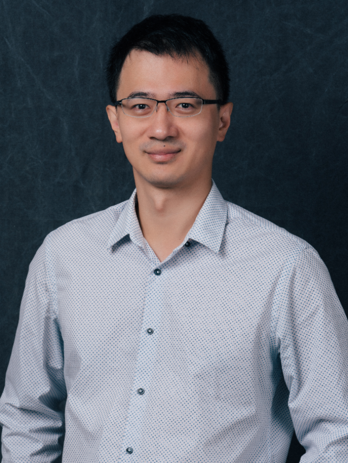

Kai-Chiang Wu
Kai-Chiang Wu received the B.S. and M.S. degrees in computer science from National Tsing Hua University (NTHU), Hsinchu, Taiwan, in 2002 and 2004, respectively, and the Ph.D. degree in electrical and computer engineering from Carnegie Mellon University (CMU), Pittsburgh, PA, in 2011. From 2011 to 2013, he was with Intel Corporation, Hillsboro, OR, as a senior software engineer working on the research and development of CAD tools for reliability verification. He is currently an assistant professor in the Department of Computer Science, National Chiao Tung University (NCTU), Hsinchu, Taiwan. His research interests include energy-aware computing, computer-aided design (CAD) for reliability, fault tolerance and error resilience in nanoscale designs, and emerging technologies. He is the principal investigator of a research group, CAD for G(reen)-RE(liable)-A(nd)-T(rustworthy)/GREAT Systems, at NCTU.
Dr. Wu was the recipient of a Best Paper Award from IEEE International Conference on Computer Design (ICCD 2008). In 2011, he was the recipient of Liang Ji-Dian Fellowship, which is annually awarded to two selected outstanding Ph.D. students of Chinese heritage in the College of Engineering, Carnegie Mellon University.

13
Journal Articles
34
Conference Papers
19
Talks & Posters
9
Awards
Education
Ph.D.
Department of Electrical and Computer Engineering, Carnegie Mellon University, Pittsburgh, PA, USA
- Carnegie Mellon University Department of Electrical and Computer Engineering
M.Sc.
Department of Computer Science, National Tsing Hua University, Hsinchu, Taiwan
B.Sc.
Department of Computer Science, National Tsing Hua University, Hsinchu, Taiwan
Experiences
2013/08 - Present
Assistant Professor
Department of Computer Science, National Chiao Tung University
2011/08 - 2013/07
Senior Software Engineer
Design Technology Solutions, Intel Corporation, USA
- Worked on CPU design analysis and convergence/closure, with focus on reliability verification and optimization.
- Worked on identifying root causes of reliability degradation, and cleaning the root causes to ensure the satisfaction of reliability requirements.
2006/08 - 2011/07
Research/Teaching Assistant
Energy Aware Computing (EnyAC) Research Group, Carnegie Mellon University
2006/02 - 2006/06
Research Assistant
Electronic Commerce Research Center, National Sun Yat-Sen University
2004/12 - 2006/01
Ensign Instructor
Conference Articles
Representative Research Contributions
Journal Papers
Representative Research Contributions
Talks & Posters
Invited Talks, Conference Presentations, and Research Posters
Invited Talk at Realtek
Aug. 2019.
Approximate Computing for High-Performance, Energy-Efficient AI at the Edge.
Invited Talk at DATE Workshop (on Machine Learning for CAD)
March 2019.
Learning-based Methodology for Assessing Chip Health in terms of Aging and Reliability.
Seminar at CS, NCTU
Feb. 2019.
Accelerating AI Applications based on High-Performance, High-Accuracy Approximate Computing.
Invited Talk at Taiwan AI Academy
Oct. 2018.
Accelerating AI Applications based on High-Performance, High-Accuracy Approximate Computing.
Invited Talk at Novatek
Sep. 2018.
Accelerating AI Applications based on High-Performance, High-Accuracy Approximate Computing.
Invited Talk at AI Computing Workshop
July 2018.
Accelerating AI Applications based on High-Performance, High-Accuracy Approximate Computing.
Seminar at CS, CCU
May 2018.
Addressing IC/SOC Aging: Design-time vs. Run-time.
Invited Talk at Realtek
Feb. 2018.
Computer-Aided IC Design for Reliability: Verification and Optimization.
Invited Talk at Synopsys
Sep. 2017.
Chip Health Assessment Using Learning-based Monitoring Strategy.
Seminar at ICE, CYCU
May 2016.
Reliable and Trustworthy Computing - An IC/CAD Perspective.
Seminar at CSIE, NCNU
Jan. 2016.
Reliable and Trustworthy Computing - An IC/CAD Perspective.
Seminar at EE, NTU
Dec. 2014.
Computer-Aided IC Design for Reliability: Verification and Optimization.
Seminar at CSE, YZU
March 2014.
Computer-Aided IC Design for Reliability: Verification and Optimization.
EDA Forum
Oct. 2013.
Analysis and Optimization of Aging-Induced Performance Degradation.
Innovation with Impact Research Exhibition
April 2011.
Optimizing Circuit Reliability: From Functional to Temporal Perspectives, Carnegie Mellon University.
Ph.D. Forum at DAC 2010
June 2010.
Reducing Circuit Soft Error Rate (SER): From Combinational to Sequential Circuits.
University Booth at DATE 2010
March 2010.
Reducing Circuit Soft Error Rate (SER): From Combinational to Sequential Circuits.
Dec. 2009.
On the Mitigation of NBTI-Induced Performance Degradation.
April 2008.
Circuit Optimization Techniques for Radiation-Induced Soft Errors.
Professional Service
After joining NCTU
Member, Technical Program Committee, DATE (2017).
Member, Technical Program Committee, ICCAD (2014-2016).
Reviewer, the following journals:
- IEEE TR (2014),
- IEEE TNS (2017),
- IEEE TCAD (2015-2016),
- IEEE TVLSI (2014-2018),
- Journal of Electronic Testing (2014),
- Journal on Emerging Technologies in Computing Systems (2015).
Before joining NCTU
Reviewer, the following journals:
- IEEE TC (2008),
- IEEE TCAD (2009, 2011),
- IEEE TVLSI (2010),
- IEEE TDMR (2010),
- ACM TODAES (2010-2011),
- Microelectronics Reliability (2010),
- Journal of Electronic Testing (2012).
Reviewer, the following conferences:
- ICCAD (2007-2008),
- VLSI Design (2008),
- DAC (2009-2011),
- DATE (2010),
- ISCA (2010),
- NOCS (2010),
- ICCD (2010),
- ICECS (2010),
- ISLPED (2011).
Honors & Awards
[104年度] National Science and Technology Council (NSTC) research support
[103年度] National Science and Technology Council (NSTC) research support
Member, Honor Society of Phi Kappa Phi, 2011
Member, Phi Tau Phi Scholastic Honor Society, Republic of China (Taiwan), 2002
Best Paper Award, International Conference on Computer Design (ICCD), 2008
Best Project Award, The Art and Science of System Level Design (18766), ECE Department, CMU, Spring 2007
Topic: Communication-Aware Face Detection Using NoC Architecture
Implemented an AdaBoost-based face detection algorithm with Network-on-Chip (NoC) architecture. The whole implementation was carried out on a Xilinx FPGA board and verified to be much faster than the software application.
Contributed to "Communication-Aware Face Detection Using NoC Architecture," in Proc. of Int'l Conference on Computer Vision Systems (ICVS), pp. 181-189, May 2008.
Sponsorships & Grants
[105年度] 科技部研究計畫
以電路特徵與行為的資料分析來探討硬體特洛伊的植入、偵測及預防之研究
三年期，經費共$2454K
[104年度] 科技部研究計畫
次14奈米晶片之即時可靠度監測及壽命延長技術
一年期，經費共$681K
[103年度] 科技部研究計畫
考慮電路老化問題之晶片可靠度驗證及最佳化研究
一年期，經費共$695K